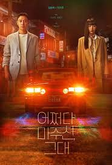

 | STRANGER ini berkisah tentang Yoon Hae Joon, ia adalah penyiar termuda yang pernah bekerja di stasiun penyiarannya.
Dia memiliki sikap yang tenang dan lugas sebagai jurnalis. Selain itu, sosok Hae Joon juga baik hati dalam kehidupan pribadinya. Kemudian ada pula Baek Yoon Young yang bercita-cita menjadi seorang penulis, tetapi akhirnya bekerja di sebuah perusahaan penerbitan. Hingga keduanya pun dipertemukan dengan cara yang unik.
Keduanya entah bagaimana melakukan perjalanan kembali ke tahun 1987. Di sana, Yoon Hae Joon mencoba menemukan kebenaran di balik kasus pembunuhan berantai sementara Baek Yoon Young berusaha mencegah orang tuanya menikah. Hingga pada akhirnya mereka segera menyadari bahwa tujuan mereka terhubung satu sama lain.(sumber:kapanlagi.com)
|